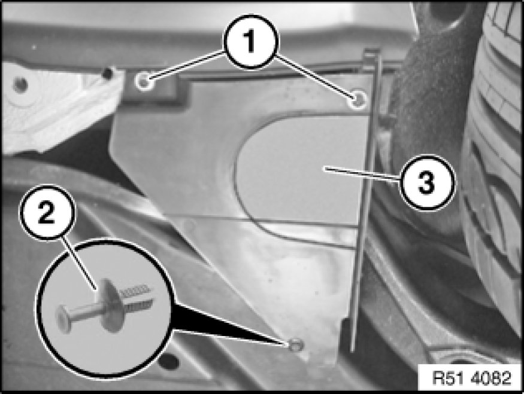
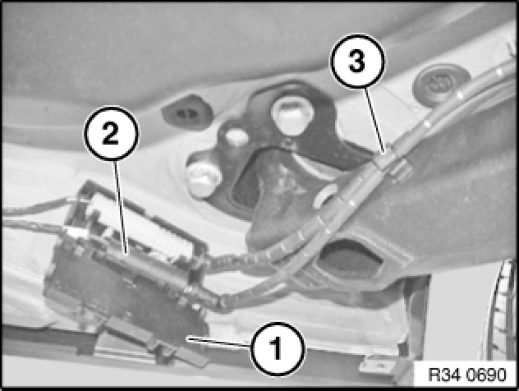
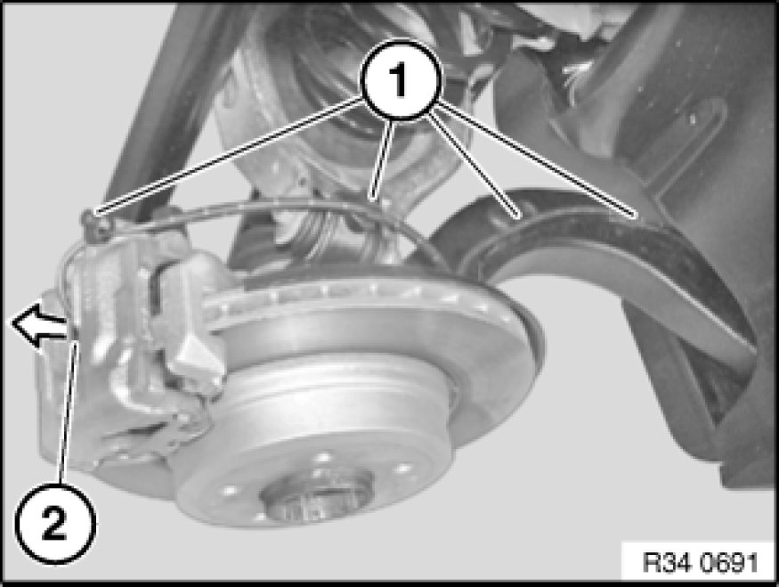

Replacing a Brake Pad Sensor (Rear)
34 35 ... - Replacing a brake pad sensor (rear)

Important!
If a brake pad wear sensor that has already been ground has to be replaced even though the minimum brake pad thickness has not yet been reached, you must observe the following: The new sliding contact must be filed down with a file to the same length as the ground sliding contact.

Necessary preliminary tasks:
- Remove rear right wheel Removing or Installing Front or Rear Wheel

Release screws (1).
Release expander rivet (2) and remove cover (3).

Open cover (1).
Disconnect plug connection (2).
Disengage cable from holders (3).
Installation Note:
Ensure proper locking of the plug connector and proper seating of the cable in the brackets.

Disengage cable from holders (1).
Pull off brake pad wear sensor (2) in direction of arrow from brake caliper.
Installation Note:
Make sure cable and brake pad wear sensor are correctly seated in brake caliper.